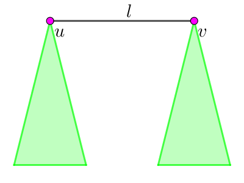
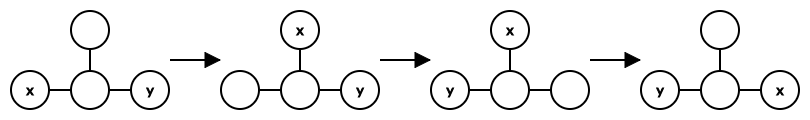
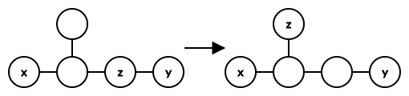
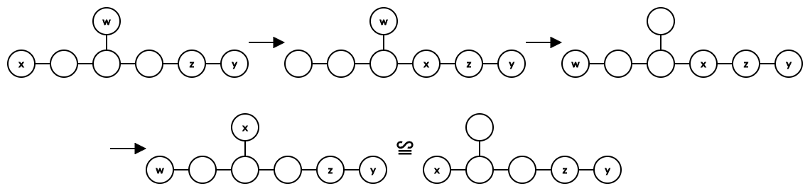

有一棵 $n$ 个点的树，上面有 $k$ 枚不同 (可区分) 的棋子，每个棋子在一个顶点上。定义一个状态需要满足 $k$ 枚棋子在不同的 $k$ 个顶点上。
如果一个状态可以通过将一枚棋子移动到与之相邻且当前没有棋子的顶点上，来得到另一个状态，则称这两个状态 "等价"。"等价" 是等价关系 (即具有对称性，传递性)。
请对于每个 $k = 1, 2, \cdots, n$，求出两两不等价的状态的个数 (即等价类的个数)。
第一行包含一个正整数 $n$ ($n \leq 10^5$)，表示树的点数。
接下来 $n - 1$ 行，每行两个正整数 $a_i, b_i$ ($1 \leq a_i < b_i \leq n; a_i \neq b_i$)，描述树上的一条边。保证这 $n - 1$ 条边恰好构成一棵树。
输出 $n$ 行，每行一个整数，第 $i$ 行的整数表示当 $k = i$ 时等价类的个数模 $10^9 + 7$ 的结果。
不难注意到，如果这 $k$ 枚棋子是相同 (不可区分) 的，显然所有的状态都是等价的。
因此对于一个状态，我们可以将其归约为所有棋子都在某 $k$ 个固定点时的情形 (比如 $1, 2, \cdots, k$)，然后统计这样的排列个数。
定义两个状态的距离为它们所对应的排列的 Hamming 距离 (即不同点的个数)。
考察任意两个状态 $s, t$ ($s \neq t$)，如果 $\operatorname{dist} \left( s, t \right) > 2$，则不难得知一定存在一个中间状态 $m$ 满足 $\operatorname{dist} \left( s, m \right), \operatorname{dist} \left( m, t \right) < \operatorname{dist} \left( s, t \right)$。
进一步，任意两个状态都可以通过交换若干对棋子得到。
于是我们只需要考虑，哪些棋子之间是可交换的。
容易验证两个棋子之间的可交换是一个等价关系 (即具有自反性、对称性、传递性)，于是设这个关系将原 $n$ 个顶点分成了 $\mathcal E$ 个等价类 $E_1, E_2, \cdots, E_\mathcal E$，则答案的表达式就为 $$ \binom n {\left| E_1 \right|, \left| E_2 \right|, \cdots, \left| E_\mathcal E \right|} $$
于是现在考虑如何求出这个等价关系。
将原树 $T$ 进行 "二度路径" 的缩边，即把所有二度路径看成一个整体，于是剩下的树 $T_e$ 中每个点的度都不为 $2$。
考虑 $T_e$ 中的一条边 $\left( u, v \right)$，设它在 $T$ 中对应的 "二度路径" 的长度 (边数) 为 $l$，则考虑当 $k \geq n - l - 1$ 时：
此时这条边将 $T_e$ 分成两棵子树，设它们的大小分别为 $S_u, S_v$ (含 $u, v$)，则有 $S_u + S_v = n - l + 1$。
若 $k > n - l - 1 = \left( S_u - 1 \right) + \left( S_v - 1 \right)$，可见至少有 $k - \left( n - l - 1 \right)$ 个点永远留在链 $u \leadsto v$ 上，且这些点将剩下的 $n - l - 1$ 个点分为两部分：一部分永远在 $u$ 所在的子树内，一部分永远在 $v$ 所在的子树内。
当 $k = n - l - 1 = \left( S_u - 1 \right) + \left( S_v - 1 \right)$ 时，类似地，我们可以看成 "$0$ 个点" 将剩下的 $k$ 个点分成了两个部分：其中 "左边" $S_u - 1$ 个点，在 $u$ 所在的子树内，"右边" $S_v - 1$ 个点，在 $v$ 所在的子树内。
换句话说，考虑左侧的 $S_u - 1$ 个点 $L$，右侧的 $S_v - 1$ 个点 $R$，以及中间的 $k - \left( n - l - 1 \right)$ 个点 $M$，则 $\left( L, M \right); \left( M, R \right); \left( L, R \right)$ 两两无法交换，且 $M$ 中的任意两个点也无法交换。
通过这个分析，我们可得 $\left( x, y \right)$ 可交换的一个必要条件：
对于任意长度为 $l \geq n - k - 1$ 的 "二度路径" $\left( u, v \right)$，$x, y$ 要么同在 $u$ 子树内，要么同在 $v$ 子树内。
下面证明这个条件的充分性。
设 $x, y$ 满足题设条件。
首先，将所有元素移动，使得 $x$ 和所有的空位连通，设这个连通块为 $T$。
然后设路径 $x \leadsto y$ 上的第一枚棋子为 $z$，考虑 $T \cup \left\{ z \right\}$ 的形态：
$T \cup \left\{ z \right\}$ 不是一条链 (path)。
若 $y = z$，则可以完成交换：
若 $y \neq z$，则可以将 $z$ 移动到链 $x \leadsto y$ 之外，转化为更简单的情形：
$T \cup \left\{ z \right\}$ 是一条链。
若 $\left( x, z \right)$ 中所有点都是 $2$ 度的，则显然与条件矛盾。
所以 $\left( x, z \right)$ 中存在 $\geq 3$ 度点，若存在与 $x, z$ 不相邻的 $\geq 3$ 度点，则：
即可将其转化为 $T \cup \left\{ z \right\}$ 不是一条链的情形。
否则，若只存在与 $x$ 相邻的三度点 $t$，考虑 "二度路径" $t \leadsto z$ 即得矛盾。
同理，若只存在与 $z$ 相邻的三度点 $t$，考虑 "二度路径" $x \leadsto t$ 即得矛盾。
于是只需要不断按照此规则操作下去，不难发现，$\operatorname{dist} \left( x, y \right)$ 单调递减，因此最终 (如果不产生矛盾) 一定可以成功将 $x$ 与 $y$ 交换。
因此，对于固定的 $k$，我们只需要考虑满足 $l \geq n - k - 1$ 的 "二度路径" 产生的影响即可。
首先不难通过 dfs 得到树上所有的 (极长) "二度路径"，考虑所有 $l \geq n - k - 1$ 的 "二度路径"，将这些路径从 $T$ 中删去，得到若干个连通块 $C_1, C_2, \cdots, C_m$。
设有 $\lambda_i$ 个棋子可以到达连通块 $C_i$，那么这 $\lambda_i$ 个点就构成了最初交换关系的一个等价类 (即前文中的 $\left| E_i \right|$)。
于是我们现在需要统计所有的 $\lambda_i$。
考虑补集转化，计算不能到达连通块 $C_i$ 的棋子个数。
设与连通块 $C_i$ 相邻 (即通过一条 "二度路径" 分隔) 的连通块为 $C_{j_1}, C_{j_2}, \cdots, C_{j_y}$，考虑其中每个连通块 $C_j$ 对其的贡献。
按照前述分析，不妨 $C_i$ 是 "连通块 $L$"，$C_j$ 是 "连通块 $R$"，中间那个 "二度路径" 是 "连通块 $M$"。则 $L$ 无法和 $M, R$ 的点进行交换 —— 换句话说，$M, R$ 中的点无法到达 $L$。
那 $M, R$ 中一共有多少棋子呢？就等于 $k - \left( n - w_j \right)$，其中 $w_j$ 表示连通块 $C_{j_y}$ 的大小。
从而，不能到达连通块 $C_i$ 的棋子个数就等于 $$ \sum_{i=1}^y \left[ k - \left( n - w_{j_i} - 1 \right) \right] = \left( k - n + 1 \right) \cdot y + \sum_{i=1}^y w_{j_i} = \left( k - n + 1 \right) \cdot y + \left( n - \left| C_i \right| \right) \tag 1 \label 1 $$
于是，由 $\eqref 1$，能到达连通块 $C_i$ 的棋子个数 $$ \lambda_i = k - \left[ \left( k - n + 1 \right) \cdot y + \left( n - \left| C_i \right| \right) \right] = \left( n - k - 1 \right) \cdot \left( y - 1 \right) + \left( \left| C_i \right| - 1 \right) \tag 2 \label 2 $$
于是我们只需要计算并维护每个连通块大小 ($\left| C_i \right|$) 以及与它相邻的连通块个数 ($y$)。
而现在我们需要对大量 $k$ 进行统计。考虑我们是将 $l \geq n - k - 1$ 的 "二度路径" 删去，因此树中存在的 "二度路径" 就是满足 $l < n - k - 1$ 的。因此我们需要按照 $n - k - 1$ 递增的顺序 (等价地，$k$ 递减的顺序) 来枚举，这样树中存在的 "二度路径" 就会依次增加，这引导我们使用并查集来维护。
考虑合并两个连通块时连通块大小和相邻连通块个数的变化。不难发现，连通块大小就等于将两个子连通块大小直接相加并加上 "二度路径" 的长度再减 $1$，而相邻连通块个数就是两个子连通块的相邻连通块个数相加后再减 $2$。
那最后连通块的数量比较多，是否需要数据结构呢？事实上不需要，只需要枚举所有的连通块即可。
事实上，连通块的个数等于尚未连的 "二度路径" 数再加 $1$，而一条长度为 $l$ 的 "二度路径" 至多只会在 $l$ 轮尚未连上，因此尚未连的 "二度路径" 的总数不过是 $\sum l = O \left( n \right)$ 级别。
于是用 std::set/std::unordered_set 维护当前所有的连通块并按照 $\eqref 2$ 式计算即可，总时间复杂度 $O \left( \operatorname{Sorting} \left( n \right) + n \cdot \alpha \left( n \right) \right)$。
#include <bits/stdc++.h>
using std::cin;
using std::cout;
typedef long long ll;
typedef std::unordered_set <int> set;
typedef std::tuple <int, int, int> tuple;
const int N = 100054, M = N * 2, mod = 1000000007;
int n, E = 0, C = 0, root;
int to[M], first[N], next[M];
int p[N], dep[N], deg[N];
int fact[N], finv[N], ans[N];
bool key[N];
set roots;
tuple chain[N];
ll PowerMod(ll a, int n, ll c = 1) {for (; n; n >>= 1, a = a * a % mod) if (n & 1) c = c * a % mod; return c;}
void init(int n) {
int i;
for (*fact = i = 1; i <= n; ++i) fact[i] = (ll)fact[i - 1] * i % mod;
finv[n] = PowerMod(fact[n], mod - 2);
for (i = n; i; --i) finv[i - 1] = (ll)finv[i] * i % mod;
}
inline void addedge(int u, int v) {
to[++E] = v, next[E] = first[u], first[u] = E, ++deg[u];
to[++E] = u, next[E] = first[v], first[v] = E, ++deg[v];
}
namespace dsu {
int p[N], size[N], expose[N];
inline void init(int n) {std::iota(p, p + (n + 1), 0), std::fill(size, size + (n + 1), 1), memcpy(expose, deg, (n + 1) << 2);}
int ancestor(int x) {return p[x] == x ? x : (p[x] = ancestor(p[x]));}
inline void connect(int x, int y, int w) {
x = ancestor(x), y = ancestor(y), assert(x != y);
if (size[x] > size[y]) std::swap(x, y);
p[x] = y, size[y] += size[x] + w - 1, expose[y] += expose[x] - 2, roots.erase(x);
}
}
void dfs(int x) {
int i, y;
for (i = first[x]; i; i = next[i]) if ((y = to[i]) != p[x])
p[y] = x, dep[y] = dep[x] + 1, dfs(y);
}
int main() {
int i, j, l, u, v;
std::ios::sync_with_stdio(false), cin.tie(NULL);
cin >> n, init(n), memcpy(ans, fact, (n + 1) << 2);
for (i = 1; i < n; ++i) cin >> u >> v, addedge(u, v);
for (i = n; i; --i) if ((key[i] = deg[i] != 2)) roots.emplace(root = i);
dfs(root);
for (i = 1; i <= n; ++i)
if (key[i] && i != root) {
for (v = p[i]; !key[v]; v = p[v]);
chain[C++] = tuple(dep[i] - dep[v], v, i);
}
std::sort(chain, chain + C), dsu::init(n);
for (j = i = 0; i < n - 1; ++i) {
for (; j < C && (std::tie(l, u, v) = chain[j], l < i); ++j) dsu::connect(u, v, l);
int &s = ans[n - i - 1];
for (int r : roots) s = (ll)s * finv[i * (dsu::expose[r] - 1) + dsu::size[r] - 1] % mod;
}
for (i = 1; i <= n; ++i) cout << ans[i] << '\n';
return 0;
}
坑1：注意公式是 $\left( n - k - 1 \right) \left( \texttt{expose[r]} - 1 \right) + \left( \texttt{size[r]} - 1 \right)$，不要算错了。
坑2：上述算法在当 $k = n$ 时会越界，不过此时显然有 $ans_n = n !$，直接处理即可。